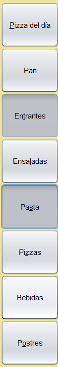
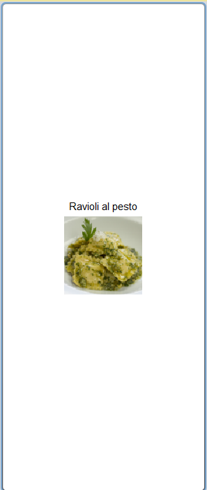
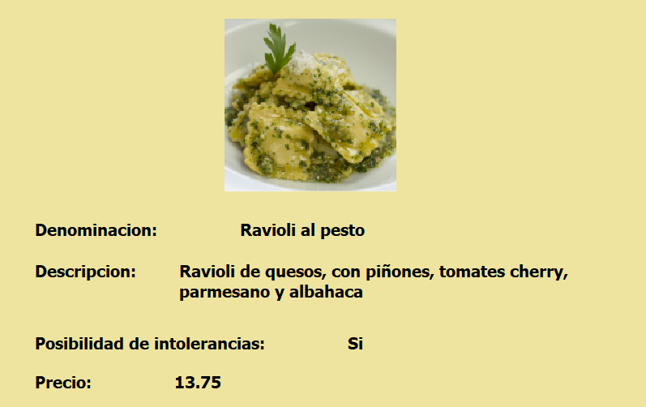
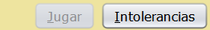
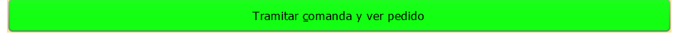

Podrá filtrar los productos disponibles escogiendo una o varias categorías a la vez mostrándose en la parte central los productos de los apartados que se hayan marcado en el filtro. También hay un botón para la pizza del día(la cual tiene un 20% de descuento), si lo pulsa se mostrará cual es nuestra pizza del día y se reiniciará el filtro. Para volver al filtro solo tiene que pulsar una de las secciones.

Pulsando sobre la imagen de cada articulo se le mostrará una ventana con la información específica del artículo que seleccionó:

---------->
Este botón podrá utilizarse en caso de que ya se haya realizado una comanda y no se haya querido jugar al juego. Recuerde que solo se puede jugar una vez por reserva.
Si esta pulsado este botón, en el centro de la ventana solo aparecerán los artículos con posibilidad de ser adaptados a intolerancias.

Si pulsa sobre este botón podrá ver un resumen del pedido y incluir las observaciones sobre la necesidad de que se realice algún plato de forma especial según las intolerancias del cliente. También podrá pagar o volver al menú principal para seguir pidiendo.
